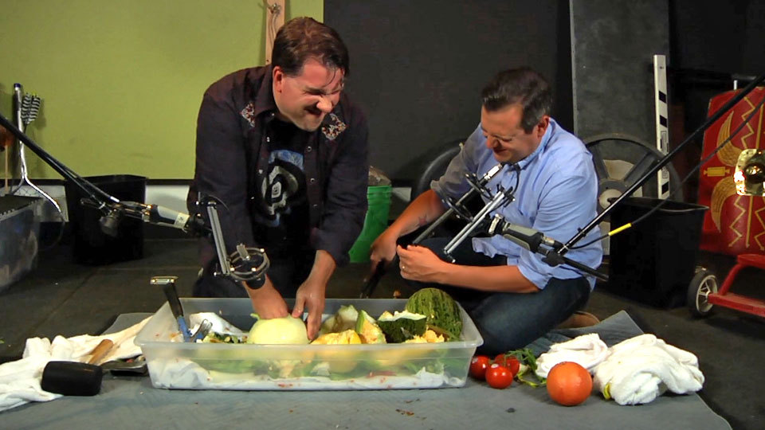

Series - Microspotting
Series - Microspotting
Microsoft is one of the most dynamic companies in the world, but there's a lot you probably don't know about this place. Join the Microspotting crew as they uncover a few of the most interesting peopl…
Microspotting: Inside the Microsoft Archives [2013/11/02]A morning ritual for Microsoft employees is reading MSW on our corporate intranet. This is where we see news, events, campus maps, and other information that we use every day at Microsoft. One of the …
Inside Soundlab [2013/11/15]Our favorite Xbox games like Halo and Forza wouldn't be the same without their signature sounds—and we found the team behind the magic. Welcome to Soundlab, Microsoft's in-house audio production studi…
Inside Real Estate & Facilities [2013/11/29]When you think of Real Estate & Facilities (RE&F), visions of campus shuttles, cafés, and facilities requests may be conjured up. But what about X-ray machines, bomb safes, and the "shake…
Inside the Microsoft Model Shop [2013/12/13]Vince Jesus, shop manager at the Microsoft Model Shop, is a serious guy with a serious business: his team creates "the part from the art" to bring new hardware ideas to life. Designers and e…
Inside Microsoft Production Studios [2013/12/27]Tucked in the West Campus building once shared with the Microsoft Company Store, you'll find the Pacific Northwest's largest media production studio: Microsoft Production Studios. Production Manager G…
The Garage [2014/01/20]Their mantra: "Doers. Not Talkers." Welcome to the Garage, Microsoft's home to grassroots innovation where employees—everywhere in the world—come together to tinker on new ideas. Here, you'l…